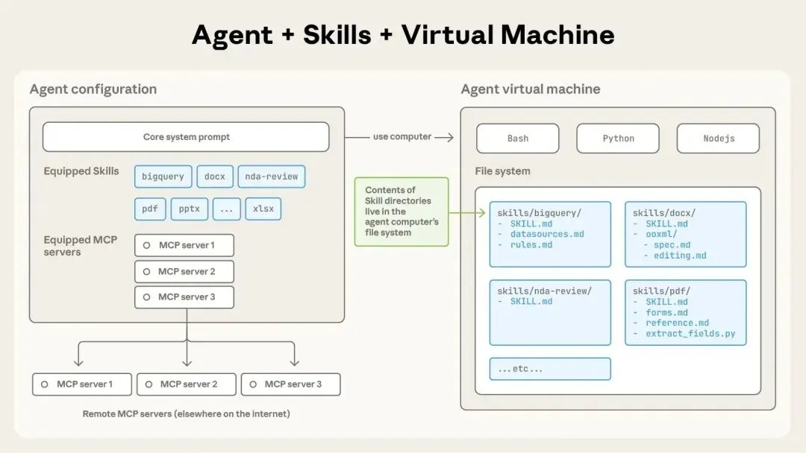
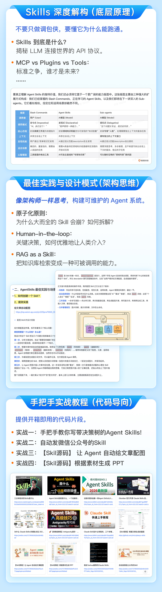

首发！Agent Skills实战指南：从 PPT 生成到自动发推文，源码级复刻
一个扎心的真相
2026 年，绝大多数人使用 AI 的方式，和两年前年没有任何本质区别。
打开对话框 → 输入问题 → 复制答案。90% 的人，还停留在 Chat 模式。
但在真实的业务系统里，Chat 只是界面，Action 才是生产力。
让 AI 不仅能说话，还能操作数据库、运行代码、控制 API——这件事，正在从“加分项”变成“必选项”。
而实现它的关键，不是 MCP，不是 Function Calling，而是 Anthropic 在 2025年 10 月悄然发布的新标准：Agent Skill。
Skill 到底是什么？

关于 Skills 的信息现在网上有很多，我总结了一套【Agent Skills 实战指南】，将底层原理到最佳实战都整合在了一起。你将获得
AgentSkills 深层解构
Agent Skills 最佳实践与场景
AgentSkills 相关学习教程
国内外优质信息源
持续更新 · 扫码免费领取

AI 时代，选择比努力重要。
别等所有人都看懂了，才发现自己还在原地用 Chat。
【Agent Skills 实战指南】
持续更新 · 扫码免费领取